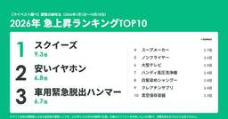
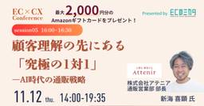
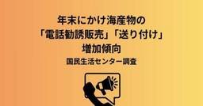
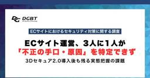
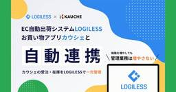
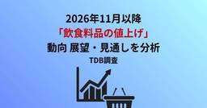
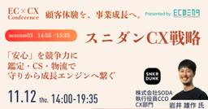
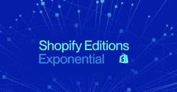
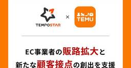
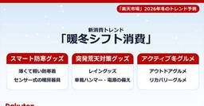

ECのミカタ
https://ecnomikata.com
ネットショップ運営を支援するビジネスポータル「ECのミカタ」。手間をかけずに、貴社ネット通販事業の収益性・業務効率性を高めるヒントを手に入れることが出来ます。
フィード

2026年の特徴的な消費行動「節約と奮発の二刀流」 マイベスト調査
ECのミカタ
株式会社マイベストは2026年10月29日、2026年1月1日から10月18日までの月間3000万人の閲覧データをもとにまとめた、2026年に見られた特徴的な4つの消費行動を発表した。※データは「マイベスト調べ」。対象はマイベストを利用した人の行動であり、消費全体を示すものではない。
1日前
フライングタイガー、2026年11月2日「日本公式オンラインストア」オープン
ECのミカタ
Flying Tiger Copenhagen（以下、フライングタイガー）は2026年11月2日、ブランド直営の「Flying Tiger Copenhagen 公式オンラインストア」をオープンした。
1日前
Yahoo!ショッピング、2026年11月22日から「ブラックフライデー」開催
ECのミカタ
LINEヤフー株式会社が運営する「Yahoo!ショッピング」は2026年11月2日、年に一度の大型企画「ブラックフライデー」の特設ページを公開した。
1日前

【11/12渋谷・無料】アテニアが語る「AI時代の通販戦略」──顧客理解の先にある「究極の1対1」とは
ECのミカタ
EC事業において、広告や販促で顧客接点を増やすことはもちろん大切だ。と同時に、「一人ひとりの顧客を深く理解し、長く選ばれ続ける関係を築いていく」こともまた、事業の持続的な成長に不可欠である。化粧品ブランド「アテニア」では、創業以来培ってきた顧客理解を基盤に、直営通販を「売る場」から「対話の場」へと再定義。KPIの見直しやブランドリニューアル、AI接客の導入など、顧客一人ひとりと向き合うための改革を進めている。2026年11月12日（木）に東京・渋谷で開催される「EC×CXカンファレンス」では、株式会社アテニア 通販営業部 部長の新海喜顕氏が登壇。同社の通販事業における実践と、AI時代の新たな戦略を語る。●参加費：無料（途中入場・退出OK）●対象：EC事業者、EC出店を検討している事業者▼イベント詳細・申し込みはこちらからhttps://ecnomikata.com/lp/2026-nov-cx/★EC事業者限定 Amazonギフトカードプレゼント
1日前

年末にかけ海産物の「電話勧誘販売」「送り付け」増加傾向 国民生活センター調査
ECのミカタ
独立行政法人国民生活センター（以下、国民生活センター）は2026年10月28日、年末にかけて海産物の電話勧誘販売や、送り付けのトラブルが増加する傾向があると注意を喚起した。
1日前

ECサイト、発生した不正の「原因・手口を特定できず」約3割 DGBT調査
ECのミカタ
株式会社DGビジネステクノロジー（以下、DGBT）は2026年10月22日、「ECサイトにおけるセキュリティ対策に関する調査」の結果を発表した。
1日前
LINEギフト、「ブラックフライデー特集」を公開 4つのテーマでキャンペーン開催
ECのミカタ
LINEヤフー株式会社は2026年11月2日、「LINEギフト」において「ブラックフライデー」特集を公開した。
2日前

LOGILESS、お買い物アプリ「カウシェ」と自動連携 受注・在庫を一元管理
ECのミカタ
株式会社ロジレスが提供するEC自動出荷システム「LOGILESS（ロジレス）」は2026年10月30日より、株式会社カウシェが運営するお買い物アプリ「カウシェ」との自動連携を開始した。
2日前

2026年11月以降「飲食料品の値上げ」動向 展望・見通しを分析 TDB調査
ECのミカタ
株式会社帝国データバンク（以下、TDB）は2026年10月30日、11月以降における飲食料品の値上げ動向と展望・見通しに関する分析を発表した。※品目数および値上げは、各社発表に基づく。また、年内に複数回値上げを行った品目は、それぞれ別品目としてカウント。値上げ率は発表時における最大値を採用。なお、価格据え置き・内容量減による「実質値上げ」も対象に含む。
2日前

【11/12渋谷・無料】スニダンの鑑定・物流・CSを事業成長につなげるCX戦略 EC×CXカンファレンス
ECのミカタ
EC市場の競争が激しくなる中、価格や品ぞろえはもちろん「安心して購入できること」も顧客に選ばれる重要なポイント。「商品への不安」「配送の不満」「問い合わせ時の対応」など、顧客が感じる不安やストレスは、購入の意思決定やサービスへの信頼にも影響する。そんな中、鑑定・物流・カスタマーサポート（CS）を一体で設計し、安心な取引環境づくりに取り組んでいるのが、マーケットプレイス「SNKRDUNK（スニダン）」を運営する株式会社SODAだ。同社はいかにしてCXを「守り」から「成長エンジン」へと転換しているのだろうか？2026年11月12日（木）に東京・渋谷で開催される「EC×CX Conference」では、同社 CX部門 / 執行役員CCOの岩井雄作氏が登壇。「スニダン」におけるCX戦略と実践を紹介する。●参加費：無料(途中入場・退出OK)●対象：EC事業者、EC出店を検討している事業者イベント詳細・申し込みはこちらからhttps://ecnomikata.com/lp/2026-nov-cx/★EC事業者限定 Amazonギフトカードプレゼント
2日前
4割以上が商品トラブルを経験、最多は「破損・汚れ」 NEXER・大黒調査
ECのミカタ
株式会社NEXER Group（以下、NEXER）は2026年10月29日、物流アウトソーシング「大黒」と共同で実施した、「ネット通販で届いた商品のトラブル」についてのアンケート結果を発表した。
2日前
LINEヤフー、「安全・安心への取り組みレポート」を公開 トラブル遭遇率は低水準を維持
ECのミカタ
LINEヤフー株式会社が提供するフリマアプリ「Yahoo!フリマ」と、ネットオークションサービス「Yahoo!オークション」は2026年10月22日、「安全・安心への取り組みレポート」を公開した。
2日前
楽天、11月4日に「Rakuten AI Technology Conference 2026」を開催
ECのミカタ
楽天グループ株式会社（以下、楽天）は2026年10月22日、テクノロジーイベント「Rakuten AI Technology Conference 2026」を11月14日に開催することを発表した。
3日前

Shopify Japan、AIエージェントとの連携や決済機能を強化 「Fall '26 Edition『Exponential』」発表
ECのミカタ
Shopify Japan株式会社は2026年10月29日、Shopifyの最新イノベーションを紹介する第10回目の「Shopify Editions」となる「Fall '26 Edition『Exponential』」を発表した。
3日前
Amazon、次世代パーソナルアシスタント「Alexa+」を国内で提供開始
ECのミカタ
Amazonは2026年10月29日、生成AI搭載の次世代アシスタントサービス「Alexa+」の早期アクセスの提供を開始した。
3日前
【11/12渋谷・無料】Oisixが実践するサイト改善・CRM改革 EC×CXカンファレンス
ECのミカタ
ECサイトの改善やCRM施策の「トライ＆エラーの繰り返し」は、EC事業の成長に不可欠である。何をどう改善していくのか。その設計のヒントは「顧客の声」にある。食品宅配サービス「Oisix」では、顧客一人ひとりの本音を起点に、サイトリニューアルやCRM基盤の刷新など、事業成長に向けた取り組みを推進している。2026年11月12日（木）に東京・渋谷で開催される「EC×CX Conference」では、オイシックス株式会社 OisixEC事業本部 CX室 マネージャーの中村佳祐氏が登壇。顧客の声をどのように事業成長の打ち手へと変え、組織を巻き込んで実行しているのか。 具体的な事例とともに紹介する。●参加費：無料(途中入場・退出OK)●対象：EC事業者、EC出店を検討している事業者▼イベント詳細・申し込みはこちらからhttps://ecnomikata.com/lp/2026-nov-cx/★EC事業者限定 Amazonギフトカードプレゼント
3日前
TikTok、新たなブランドセーフティーセンターを発表 ブランド保護への取り組みを推進
ECのミカタ
TikTokは2026年10月27日、シンガポールで「APAC Responsible Media Forum 2026」を開催し、新たに「TikTok Brand Safety Center」および「Brand Protection Playbook」を発表した。イベント当日には、アジア太平洋地域各地のブランド、広告会社、パートナー企業から30名の参加者がシンガポールに集い、ブランドセーフティと広告の未来への責任について共に議論した。本記事ではEC事業者へ向けて、一部の内容を抜粋して紹介する。
3日前

SAVAWAY、EC一元管理システム「TEMPOSTAR」と「Temu」を連携
ECのミカタ
SAVAWAY株式会社は2026年10月28日、EC事業者のバックヤード業務を効率化する複数ネットショップ一元管理システム「TEMPOSTAR（テンポスター）」において、グローバルECマーケットプレイス「Temu」との連携を開始したと発表した。
3日前
Yahoo!ショッピング、「AIおまかせ比較」を刷新した「AIベスト提案」順次提供
ECのミカタ
LINEヤフー株式会社が運営する「Yahoo!ショッピング」は2026年10月28日、「AIおまかせ比較」を刷新した「AIベスト提案」を順次提供すると発表した。
5日前

楽天市場「2026年冬のトレンド予測」 新トレンド「暖冬シフト消費」に注目
ECのミカタ
楽天グループ株式会社（以下、楽天）は2026年10月28日、「『楽天市場』2026年冬のトレンド予測」を発表した。2026年は、冬にかけて続くことが見込まれるエルニーニョ現象（※）と地球温暖化の進行により、気象庁は全国的に暖冬傾向になるとみている。「楽天市場」では、ユーザーの購買行動分析データを基に、暖冬予測に備えたこの冬ならではの消費行動を「暖冬シフト消費」と名付けた。軽やかで機能的な「スマート防寒グッズ」、長引く雨や急な荒天に備える「突発荒天対策グッズ」、暖冬だからこそ快適に楽しめる「アクティブ冬グルメ」のトピックを柱に、今冬注目の商品群を紹介した。※太平洋赤道域の日付変更線付近からペルー沿岸にかけての海域で、海面水温が平年より高い状態が1年程度続く現象。
5日前